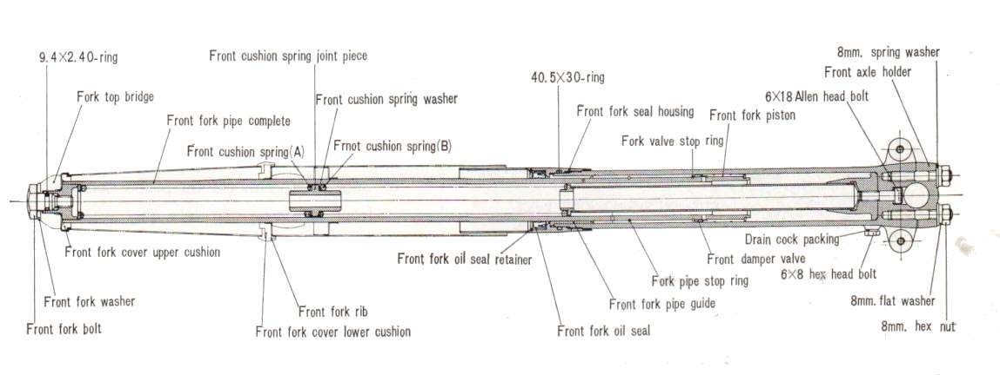

After a fall, a hit against a kerb or a pothole, the fork legs may sit at different heights in the clamps, be twisted so the wheel is not square to the bar, or be bent. Twisted legs can usually be realigned. Bent tubes, a bent lower yoke or a bent steering stem cannot be safely straightened at home and need new parts.
Is it safe to ride?
No, until you know nothing is bent. A bent fork can bind, leak and change how the bike steers.
Quick checks first
- Stand in front: is the wheel straight with the bar?
- Measure how far each inner tube sticks out above the top clamp. Same on both sides?
- Look along each tube from above and from the side: any curve?
- Push the forks down with the brake on: smooth and equal?
- Look at the steering lock stops and the frame head tube for cracks or marks.
Diagnose it step by step
1Is any tube, the lower yoke or the frame visibly bent or cracked?
- Yes: do not ride. Go to Inspect the frame after a crash. Bent parts are replaced; do not straighten them (the K-Light 125 manual says never straighten the damper rod or a bent axle, and the same applies to tubes).
- No: go to step 2.
2Are the tubes at different heights in the clamps?
- Yes: they have slipped. Loosen the clamps and set them equal with Align the front wheel, forks and handlebar (K-Light 125: inner tube top flush with top clamp).
- No: go to step 3.
3Is the wheel turned against the bar?
- Yes: the legs are twisted in the clamps. Align the front wheel, forks and handlebar.
- No: go to step 4.
4After alignment, do the forks still stick, or will the wheel not line up?
- Yes: a tube may be slightly bent. The workshop checks each tube on V-blocks with a dial gauge. See Front forks feel sticky or stiff.
- No: go to step 5.
5Is there a new oil leak from a seal after the hit?
- Yes: Oil leaking from a fork leg. A tube that leaks after a hit is often bent.
- No: road test gently. If the bike pulls or the bar sits off centre, have the frame checked.
Causes, most likely first
| Cause | How to confirm | Fix |
|---|---|---|
| Legs twisted in clamps | Wheel turned against bar | Align the front wheel, forks and handlebar |
| Tubes slipped in clamps | Different heights above top clamp | Align the front wheel, forks and handlebar |
| Bent fork tube | Visible bend; dial gauge | Replace tube, new seals |
| Bent yoke or stem | Will not align | Workshop, replace part |
| Bent frame | Crash; nothing else explains it | Inspect the frame after a crash |